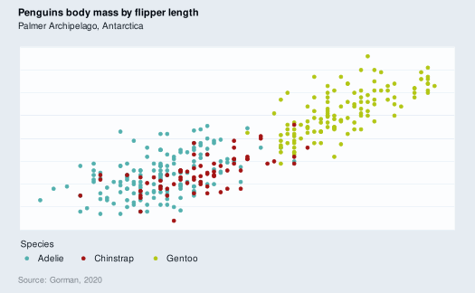

Void theme for a ggplot visualisation. Element prefixes to modify are: text_, title_, subtitle_, caption_, background_pal_, and gridlines_.
Usage
gg_theme_void(
text_size = 10,
text_family = "",
text_pal = "#121b24",
title_size = text_size * 1.1,
title_family = text_family,
title_pal = colorspace::darken(text_pal, 0.08, method = "absolute"),
title_face = "bold",
title_position = "plot",
title_hjust = 0,
title_vjust = 1,
title_margin = ggplot2::margin(t = ((title_size^0.5) * -0.5) - 3.85, b = title_size *
1.75),
subtitle_size = text_size,
subtitle_family = text_family,
subtitle_pal = text_pal,
subtitle_face = "plain",
subtitle_hjust = 0,
subtitle_vjust = 1,
subtitle_margin = ggplot2::margin(t = subtitle_size * -1.5, b = subtitle_size * 1.75),
caption_size = text_size * 0.9,
caption_family = text_family,
caption_pal = scales::alpha(text_pal, 0.5),
caption_face = "plain",
caption_position = "plot",
caption_hjust = 0,
caption_vjust = 0,
caption_margin = ggplot2::margin(t = caption_size * 1.25),
background_pal_plot = "#e6ecf2",
background_pal_panel = "#fcfdfe",
background_pal_key = background_pal_plot,
gridlines_linewidth = text_size/150,
gridlines_pal = "#95b8dc"
)Arguments
- text_size
The base size of the text. Defaults to 10.
- text_family
The base font family of the text. Defaults to "".
- text_pal
The base colour of the text. Defaults to "#121b24".
- title_size
The size of the title. Defaults to text_size * 1.1.
- title_family
The font family of the title. Defaults to the text_family.
- title_pal
The colour of the title. Defaults to 0.08 darker than the text_pal.
- title_face
The font face of the title. Defaults to "bold".
- title_position
The horizontal alignment of the title (and subtitle) to either "plot" or "panel".
- title_hjust
The horizontal adjustment of the title.
- title_vjust
The vertical adjustment of the title.
- title_margin
The margin of the title. A ggplot2::margin function.
- subtitle_size
The size of the subtitle. Defaults to the text_size.
- subtitle_family
The font family of the subtitle. Defaults to the text_family.
- subtitle_pal
The colour of the subtitle. Defaults to the text_pal.
- subtitle_face
The font face of the subtitle. Defaults to "plain".
- subtitle_hjust
The horizontal adjustment of the subtitle.
- subtitle_vjust
The vertical adjustment of the subtitle.
- subtitle_margin
The margin of the subtitle. A ggplot2::margin function.
- caption_size
The size of the caption. Defaults to text_size * 0.9.
- caption_family
The font family of the caption. Defaults to the text_family.
- caption_pal
The colour of the caption. Defaults to the text_pal with an alpha of 0.5.
- caption_face
The font face of the caption. Defaults to "plain".
- caption_position
The horizontal alignment of the caption to either "plot" or "panel".
- caption_hjust
The horizontal adjustment of the caption.
- caption_vjust
The vertical adjustment of the caption.
- caption_margin
The margin of the caption. A ggplot2::margin function.
- background_pal_plot
The colour of the plot background colour. Defaults to "#f3f6f9".
- background_pal_panel
The colour of the panel background colour. Defaults to "#fcfdfe".
- background_pal_key
The colour of the legend key. Defaults to the background_pal_plot.
- gridlines_linewidth
The linewidth of the vertical major gridlines. Defaults to text_size / 150.
- gridlines_pal
The colour of the vertical major gridlines. Defaults to "#95b8dc".
Examples
library(palmerpenguins)
penguins |>
gg_point(
x = flipper_length_mm,
y = body_mass_g,
col = species,
title = "Penguins body mass by flipper length",
subtitle = "Palmer Archipelago, Antarctica",
caption = "Source: Gorman, 2020",
theme = gg_theme_void()
)
#> Scale for x is already present.
#> Adding another scale for x, which will replace the existing scale.
#> Scale for y is already present.
#> Adding another scale for y, which will replace the existing scale.
#> Warning: Removed 2 rows containing missing values (`geom_point()`).
